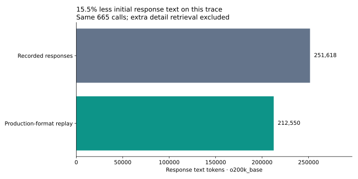
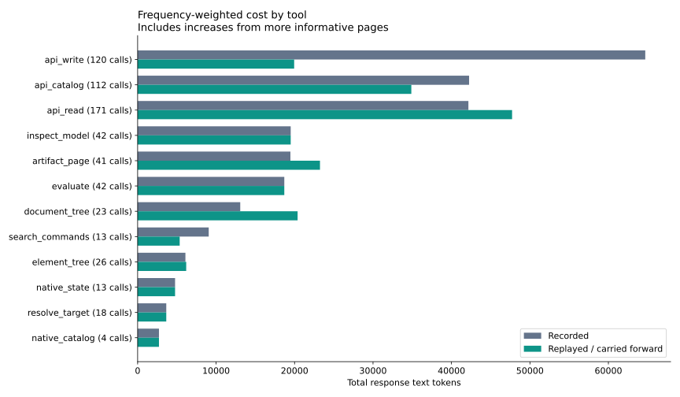
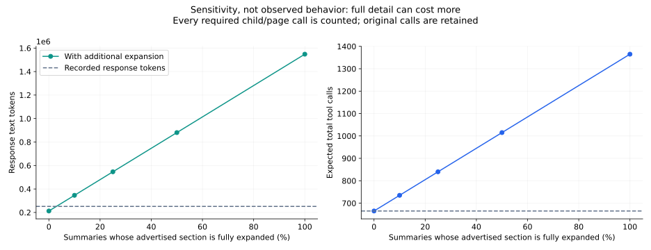

Two supplied threads · 473 calls replayed through production formatting · remaining calls carried forward · o200k_base text tokens. Offline replay, not an agent task rerun. Additional detail demand is hypothetical and can erase savings.
Method and complete tables · Tool CSV · Call CSV · Metrics JSON


